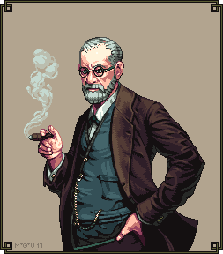

Descubre datos interesantes sobre Freud.
Freud es el padre del psicoanálisis, un método que tiene como objetivo el tratamiento de enfermedades mentales, que comenzo con el estudio de las neurosis. El psicoanálisis freudiano es una teoría que intenta explicar el comportamiento de los seres humanos y se basa en el análisis de los conflictos sexuales inconscientes que se originan en la niñez.
